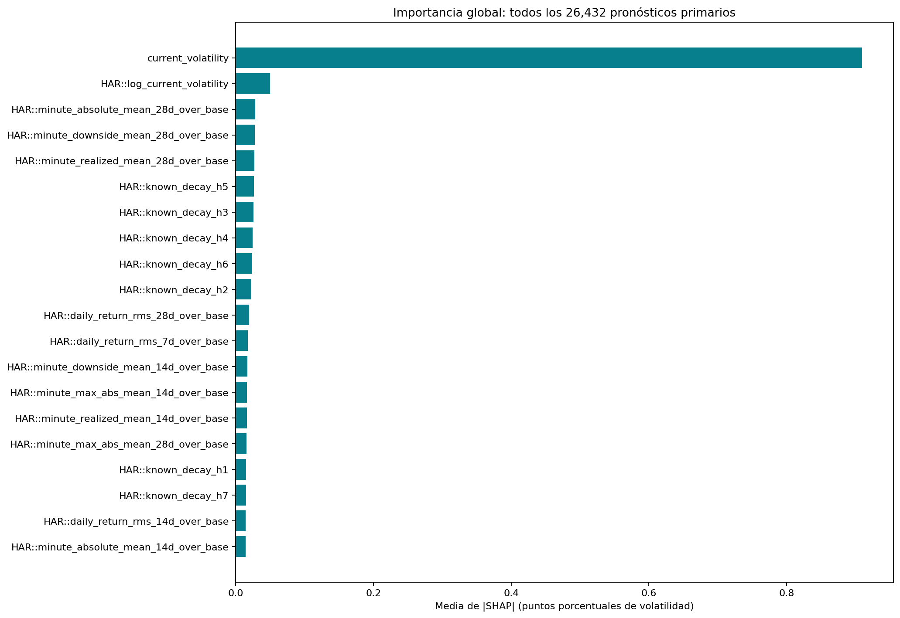
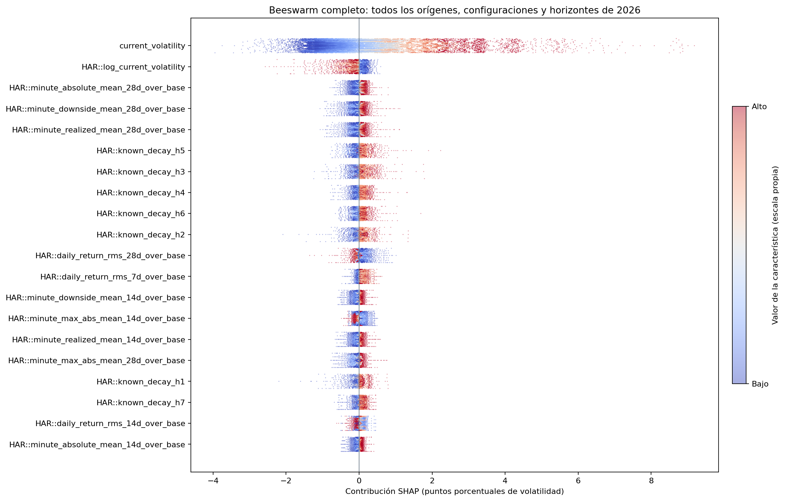

SHAP global completo del procedimiento HAR-XG: 2026
26,432 pronósticos explicados; método bayesian, 16 configuraciones, 236 orígenes y siete salidas por origen. Solo evidencia retrospectiva local.
Error máximo de aditividad: 7.11e-15 puntos porcentuales. Esto valida la reconstrucción numérica de la predicción, no demuestra exactitud causal o estadística.
Selección exclusivamente con desarrollo 2024
| method |
outer_mse |
outer_rows |
outer_mse_sd |
| bayesian |
0.37955 |
96 |
0.5142414 |
| grid |
0.3883937 |
96 |
0.5371886 |
| genetic |
0.3922674 |
96 |
0.5444994 |
| random |
0.4357062 |
96 |
0.6627654 |
Importancia global y distribución completa


| feature |
mean_absolute_shap |
forecasts |
| current_volatility |
0.909679 |
26432 |
| HAR::log_current_volatility |
0.04963782 |
26432 |
| HAR::minute_absolute_mean_28d_over_base |
0.02830562 |
26432 |
| HAR::minute_downside_mean_28d_over_base |
0.0277235 |
26432 |
| HAR::minute_realized_mean_28d_over_base |
0.02728514 |
26432 |
| HAR::known_decay_h5 |
0.02618086 |
26432 |
| HAR::known_decay_h3 |
0.02539478 |
26432 |
| HAR::known_decay_h4 |
0.02473199 |
26432 |
| HAR::known_decay_h6 |
0.02380233 |
26432 |
| HAR::known_decay_h2 |
0.02247016 |
26432 |
| HAR::daily_return_rms_28d_over_base |
0.01911512 |
26432 |
| HAR::daily_return_rms_7d_over_base |
0.01750923 |
26432 |
| HAR::minute_downside_mean_14d_over_base |
0.01668348 |
26432 |
| HAR::minute_max_abs_mean_14d_over_base |
0.01622794 |
26432 |
| HAR::minute_realized_mean_14d_over_base |
0.01610575 |
26432 |
| HAR::minute_max_abs_mean_28d_over_base |
0.0158615 |
26432 |
| HAR::known_decay_h1 |
0.0152215 |
26432 |
| HAR::known_decay_h7 |
0.01510491 |
26432 |
| HAR::daily_return_rms_14d_over_base |
0.01426334 |
26432 |
| HAR::minute_absolute_mean_14d_over_base |
0.01421014 |
26432 |
Alcance y límites
- Cobertura completa del ámbito primario declarado: 16 configuraciones × 236 orígenes de 2026 × siete horizontes. No incluye 2025 en esta afirmación global.
- Se explica el procedimiento HAR-XG elegido por menor MSE externo medio de 2024. Esta selección de procedimiento es un paso adicional de selección de desarrollo; no usa pérdidas de 2025/2026.
- Una permutación nominal forward/reverse por origen, presupuesto 441 evaluaciones de máscara con p=220. Las interacciones de orden superior pueden requerir más permutaciones; no se reporta error estándar ni convergencia Monte Carlo con este presupuesto.
- Ocho filas de entrenamiento de 660, seleccionadas con semilla42 por configuración, aproximan la población de referencia. Reducen costo y precisión; no equivalen a integrar todo train.
- Independent masking combina columnas derivadas que comparten precios, bases y ventanas: puede generar puntos fuera de la variedad de datos coherentes. No son efectos causales sobre precios, retornos o riesgo.
- El espacio explicado tiene 220 columnas, algunas redundantes o no usadas por el modelo seleccionado. Las atribuciones dependen de esta representación y del fondo; no equivalen automáticamente a importancia de variables primitivas independientes.
- Se conserva el orden de orígenes y horizontes; no se seleccionan casos por error ni se submuestrea el conjunto explicado. El jitter gráfico es determinista y no modifica los datos.
- Las unidades de salida son puntos porcentuales de volatilidad, sin anualizar; todos los pronósticos reciben la misma ponderación global. Los siete horizontes son dependientes y no son réplicas independientes.
- La aditividad se verifica para todos los orígenes y salidas. Las invariantes del enmascarador usan igualdad exacta: np.isclose puede omitir diferencias pequeñas amplificadas por el modelo. Cumplir aditividad no prueba exactitud estadística de Shapley ni validez causal.
- Modelos, selecciones, código de entrenamiento, predicciones y archivos originales se verifican por hashes antes y después. Este análisis no entrena, selecciona por test, modifica el modelo vigente ni publica resultados.
Protocolo previo · Cobertura y verificaciones · Importancias globales · Detalle por configuración y horizonte
Fuentes: Permutation SHAP, Independent background masker, Shapley explanations